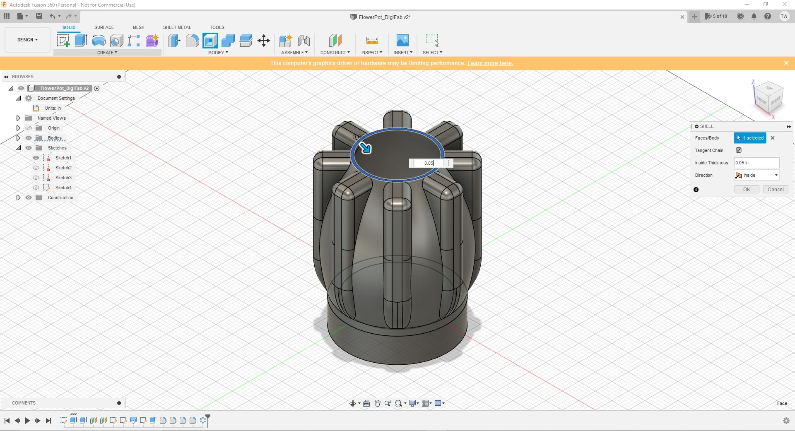

Week 6
For this weeks project we were given the task to use the Digital Fabrication Lab's FDM Printers in order to create a flower pot. First we need to understand what an FDM printer actually is though. An FDM printer stands for Fused Deposition Modeling or in other words a machine that uses a continuous thread of plastic fillament that is heated up and shaped to a prescribed 3D shape. This is achieved through a physics based and geographic shaping software to create shapes. This a long process to buckle up.
1. Using Fusion360
First to start off, since we already made a desk organizer which included a circle that is 3inches in diameter we need to begin with a base of 3 Inches. Now that this is done we can move on to creating the base of the flower pot.
2. Creating a Base
Within the 3 Inch Diameter circle we need to create an offset. Choosing the offset tool we can create an offset of 0.25 from the edge of the circle. Once this is done we now can finish our sketch and begin extruding.
3. Extruding the base.
Selecting the offsetted area we can press the "E" key to bring up our extrude menu. From there we need to extrude down. For our purposes the extrude needs to be -0.75inches and it needs to be a new body. Once these settings are selected we can click Ok.
Selecting the Top view we need to select the top offset plane and the inner hole within the circle we created. From there we can extrude .2 inches along with that we also need to make sure that it is joining the base.
4. Offset Planes.
Now that we have our base for the flower pot we need to begin to start building off of it. The way that we can do this is by using Offset planes. Lets go to "Construct" then "Offset Plane" and we want our plane to be placed on the top of our base. At this point we are also going to decide how tall we want our pot to be. For the middle section we want to input our first offset plane to be 2 inches high. Repeat this process so that you have two offset planes, one at 2inches and one at 3.5inches.
5. The Final Base
Here is a look at the final base for our flower pot, it will give us the foundation and structural support for the printer to print off of and will allow us to use the base as a way to add offset planes.
6. Offset Plane 1
By selecting the top of our base we can select which plane we want our sketch to be set on. We need to select the bottom plane and set the distance to 2 inches. Once done we can click done and move on to the next offset plane.
Here is what our first plane should look like.
Following the same process select the top of our base, select the bottom plane and input the distance for our plane to 3.5 inches.
From here we can begin to create our shapes to form the structure of our flower pot. Select the first offset plane and create a circle.
Here is what the view from about should look like. We need a diameter of roughly 3.25 inches or more in order to create the vase shape for our pot.
7. Offset Plane 2
For the second plane we are going to follow the same steps except this time I decided to make my flower pot have a swift bottling at the top. To achieve this I made my circle 2 inches in diameter.

8. Outer Shell
Now that we have out defining circles that will dictate our height and width of the pot we can now begin to construct the outer portion of our pot.
To achieve this we need to choose the lift tool and select our sketches in order from bottom to top. You will see that as you do this the outer shell will fill in.
Before
After
9. Ornimenting
In order to personalize the outside to give out pot a special shape and look we need to do a couple things. Firstly, we need to create a new sketch within the pot. To do this, simply select the create a new sketch option and select the origin within our flower pop. You will be prompted to choos what axis we want, in that case we need to choose the axis that corrisponds to our side profile. Once there, it may be hard but we can create a rectangle that we will then replicate to go around our pot.
Once we have our shape within our pot we need to extrude it and join it with the outer shell. Follow these settings: Profile Plane, One Side, The Object, Select the Main Pot, and Join.
Step 1 - Inner sketch plane
Step 2 - Creating the sketched shape
Step 3 - Inner Sketch
Step 4 - Distance Extrude
Step 5 - Final Extrude
9. Personalizing my outer design
Since I have had experience with using fusion360 before I am away of how to use the fillet tool. As you can see here I used the fillet tool on most if not all the edges in order to add character and artistic arches. This is also with the hopes to blend the outer design with the flowerpot adding some depth and personal touch.
10. Using the circular pattern tool
At this point we are ready to use the circular pattern tool. For this we are able to select the axis we would like to replicate on along with allowing us to choose how many replicas we can add before It gets too crowded. For my purposes I chose to replicate 8 times.
This is what it should look like.
11. Shelling
One issue to this design is that at the moment there is no way to put anything into the pot. However to change this we must use the shell tool. Click the top of the pot and choose the distance to be 0.05. Here is what it should look like. 
12. Saving the file.
Now that we are done with the pot's design in fusion we need to save hte file for the future along with saving it as a file for the Prusa Slicer to be able to read. The file that we need to save it as is named an "stl" file. Once downloaded we can send it to ourselve so that we can download it from the lab.
13. Setting up the printer.
Becuase we sent our project files to ourselves before coming to the lab it makes it very easy to just sign in and download our file. From gmail, lets download our file.

15. Downloaded and Opening
In our finder we can check our downloads folder and check out file to double check that our file is there and ready to be put into our Prusa Software. Right click the file and select the dropdown "Open With" Prusa Slicer.
16. Setting up to print
Now that we are in Prusa Slicer we can see that our pot is correctly placed in the workspace of the printer and now we can start selecting our settings.
17. Settings
Here are the settings that were required for my print not to fail and collapse.
Now we are ready, the file will compress and upload onto the flash drive that we inputted into the computer. Take the flash drive and reinsert it into the prusa and hit print and see the printer begin building the base. We need to wait 30 Minutes to make sure that any major failures dont occure before major printing progress has been made.
18. The Final Product
Here is the final product, fully sanded and finished. Luckily there were not any failures or mistakes made through the printing process making a clean and successful print.
Angle 1
Angle 2
Angle 3
Angle 4
In the the Desk Organizer
Unfortunately however, I made a mistake in my measurements when creating the base and therefore the flower pot wont fit in the desk organizer. This was an oversight on my part